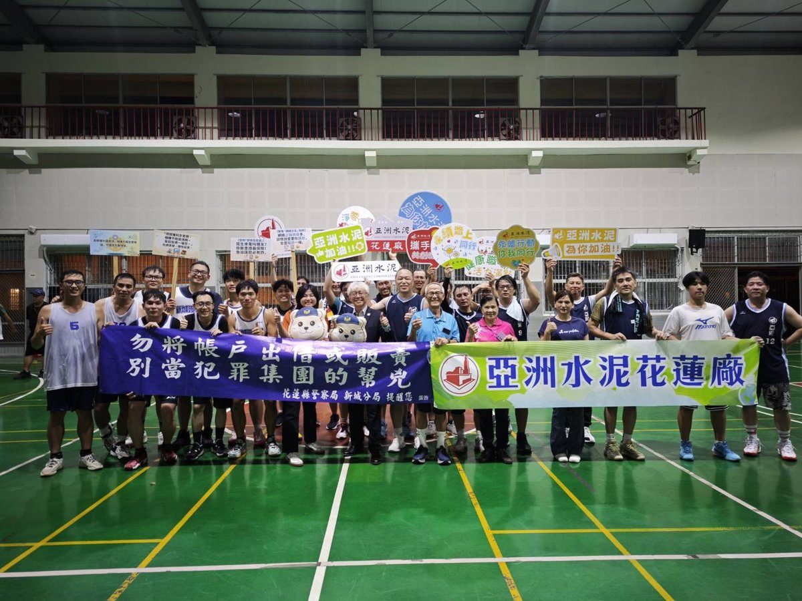

花蓮新城分局攜手亞泥鬥詐 籃球賽交流激盪反詐共識

可樂電子報小編/編輯
為強化警民合作，並提升企業員工反詐意識，花蓮縣警察局新城分局於民國115年7月15日與在地企業亞洲水泥公司舉辦友誼籃球賽。活動透過健康運動與交流，有效拉近警民距離，共同構築安全安心的生活環境。
本次活動在分局長賴楷淳及亞洲水泥廠長陳志賢的共同出席下順利舉行，雙方隊員秉持「友誼第一、比賽第二」精神，在球場上展現團隊合作與運動家風範。場邊加油聲此起彼落，氣氛熱烈融洽，亦展現警企聯手打擊詐欺的決心。

新城警分局並藉此機會，向亞洲水泥員工宣導最新詐騙手法，包括假投資、假網購、假交友及假冒機構等，提醒民眾提高警覺。警方強調，接到可疑電話或訊息時，務必遵循「一聽、二掛、三查證」原則，如有疑問可撥打165反詐騙諮詢專線或110報案電話查證。

警方表示，打擊詐騙犯罪需要全民共同參與，感謝亞洲水泥長期支持地方公益及警政工作。期盼透過警、企合作，將反詐騙觀念傳遞至企業員工及廣大民眾，共同提升全民識詐、防詐能力，以維護民眾財產安全，營造安居樂業的生活環境。